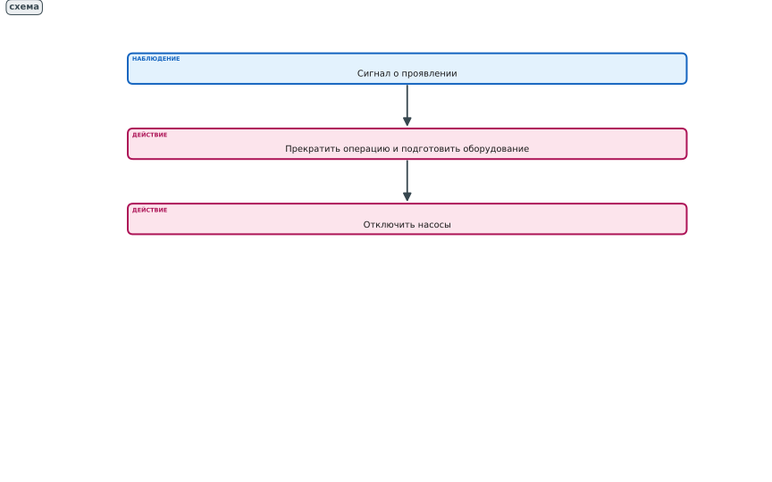
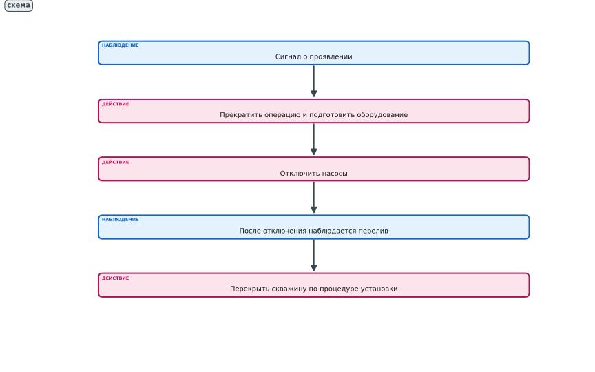

Самоприток — поступление флюида без подачи насосов.
Перелив при проверке в примере автора требует срочного перекрытия по процедуре установки.
Пороговая идея. Понять, чем проверка самопритока и перекрытие отличаются от обычной циркуляции. модель
Анимация: как это происходит


1 / 6
Почему поток важен при отключенных насосах?
Допущения: Условная схема; блоки не задают временной масштаб или размеры оборудования..
Как это работает
Механизм
Порядок перекрытия меняется по типу скважины, месту, установке и виду работ. В примере сигнал о проявлении требует прекратить бурение или испытание и подготовить место для клапана. стр. 314
«Поэтапные работы, связанные с перекрытием скважины, зависят от типа скважины, места ее расположения (на суше или на море), буровой установки (стационарные, морские полупогружные или плавучие буровые установки), типа проводимых работ (в процессе добления, испытания или при СПО).»
«В случае получения сигнала или предупреждения о возникновении проявления вскрываемого или испытываемого пласта процесс бурения (испытания) прекращают, рабочую трубу поднимают над столом ротора на такую высоту, чтобы можно было установить безопасный клапан под рабочей трубой.»
схема
Схема: когда нужна проверка на самоприток.
Класс B · схема · нарисовано кодом · стр. 314–315
Практика
В зоне уплотнения размещают тело трубы, а не муфту. Отключают насосы и проверяют самоприток. стр. 314
«Следят также за тем, чтобы против уплотнений превенторов располагалась не муфта, а бурильные (или насосно-компрессорные) трубы.»
«Буровые насосы отключают и проверяют скважину на самоприток.»
Нюансы
Если начинается перелив, требуется срочное перекрытие. Для перекрытия автор описывает устьевое оборудование или штуцеры. стр. 314–315
«Если из скважины начинается перелив, то ее необходимо срочно перекрыть.»
«операция выполняется при помощи устьевого оборудования или штуцеров.»
По шагам
Порядок в описанном случае
В примере сигнал о проявлении требует прекратить бурение или испытание и подготовить место для клапана. стр. 314
В зоне уплотнения размещают тело трубы, а не муфту. стр. 314
Отключают насосы и проверяют самоприток. стр. 314
Если начинается перелив, требуется срочное перекрытие. стр. 314
Цифры и условия
Порядок перекрытия меняется по типу скважины, месту, установке и виду работ. стр. 314
Если начинается перелив, требуется срочное перекрытие. стр. 314
Частая ошибка модель
✗Ошибка: Есть один порядок перекрытия для любой буровой.
✓На самом деле: Порядок зависит от оборудования, типа установки и выполняемых работ; схема главы не заменяет регламент.
Что это значит для данных модель
Понять, чем проверка самопритока и перекрытие отличаются от обычной циркуляции.
Вход
Сигнал о проявлении, режим насосов и наличие перелива
Выход
Решение бригады о перекрытии и подтверждение режима
Где ломается
Данные от одной установки не задают порядок для другой.
гипотеза Показания сопоставимы только при известном режиме работ.
Где здесь ручной труд специалиста
Входные данные
Сигнал о проявлении, режим насосов и наличие перелива
Ручные шаги
Сверить показания и журнал операции.
Точки суждения
Понять, чем проверка самопритока и перекрытие отличаются от обычной циркуляции.
Время
Данные о длительности ручной сверки в главе не приведены.
Типичные ошибки
Данные от одной установки не задают порядок для другой.
Аналогия модель
Проверка контекста события в журнале перед интерпретацией метрики.
Где аналогия перестаёт работать: События в стволе физические, а показания могут запаздывать.
Как это делается сейчас модель
За рабочими решениями обращаются к действующему регламенту и ответственному специалисту; этот узел объясняет учебный пример.
Глубже
Граница ИТ-аналогии модель
События в стволе физические, а показания могут запаздывать.
Новые понятия
Самоприток (flow with pumps off)
Поступление флюида в скважину без подачи буровых насосов. модель
Перекрытие скважины (well shut-in)
Герметизация скважины для контроля проявления и регистрации давления. модель
Безопасный клапан (drillstring safety valve)
Клапан для перекрытия канала в колонне труб. модель
Буровой насос (mud pump)
Насос, подающий буровой раствор в скважину. модель
Превентор (blowout preventer)
Устройство устьевого оборудования, предназначенное для герметизации скважины. модель
Муфта (tool joint)
Соединительная часть труб, геометрия которой отличается от тела трубы. модель
Бурильная колонна (drillstring)
Соединенная колонна труб, через которую подают раствор и работают долотом. модель
Проверь себя
Один ответ
Верный ответ: Чтобы отличить самоприток от потока, созданного насосами
Все утверждения шага с дословной цитатой автора и страницей книги (по PDF).
Порядок перекрытия меняется по типу скважины, месту, установке и виду работ. наблюдение
«Поэтапные работы, связанные с перекрытием скважины, зависят от типа скважины, места ее расположения (на суше или на море), буровой установки (стационарные, морские полупогружные или плавучие буровые установки), типа проводимых работ (в процессе добления, испытания или при СПО).»
В примере сигнал о проявлении требует прекратить бурение или испытание и подготовить место для клапана. наблюдение
«В случае получения сигнала или предупреждения о возникновении проявления вскрываемого или испытываемого пласта процесс бурения (испытания) прекращают, рабочую трубу поднимают над столом ротора на такую высоту, чтобы можно было установить безопасный клапан под рабочей трубой.»
В зоне уплотнений должно быть тело трубы, а не муфта. наблюдение
«Следят также за тем, чтобы против уплотнений превенторов располагалась не муфта, а бурильные (или насосно-компрессорные) трубы.»
Отключают насосы и проверяют самоприток. наблюдение
«Буровые насосы отключают и проверяют скважину на самоприток.»
Если начинается перелив, требуется срочное перекрытие. наблюдение
«Если из скважины начинается перелив, то ее необходимо срочно перекрыть.»
Для перекрытия автор описывает устьевое оборудование или штуцеры. наблюдение
«операция выполняется при помощи устьевого оборудования или штуцеров.»
Исходный текст урока
Стр. 314 · 4.2.14. ЛИКВИДАЦИЯ НЕФТЕГАЗОПРОЯВЛЕНИЙ ПРИ БУРЕНИИ СКВАЖИН
Поэтапные работы, связанные с перекрытием скважины, зависят от типа скважины, места ее расположения (на суше или на море), буровой установки (стационарные, морские полупогружные или плавучие буровые установки), типа проводимых работ (в процессе добления, испытания или при СПО). Перекрытие скважины при помощи рассматриваемой компоновки устьевого оборудования производится в следующей последовательности.
Стр. 314 · 4.2.14. ЛИКВИДАЦИЯ НЕФТЕГАЗОПРОЯВЛЕНИЙ ПРИ БУРЕНИИ СКВАЖИН
В случае получения сигнала или предупреждения о возникновении проявления вскрываемого или испытываемого пласта процесс бурения (испытания) прекращают, рабочую трубу поднимают над столом ротора на такую высоту, чтобы можно было установить безопасный клапан под рабочей трубой. Следят также за тем, чтобы против уплотнений превенторов располагалась не муфта, а бурильные (или насосно-компрессорные) трубы. Буровые насосы отключают и проверяют скважину на самоприток. Если из скважины начинается перелив, то ее необходимо срочно перекрыть. Эта технологическая операция выполняется при помощи устьевого оборудования или штуцеров.